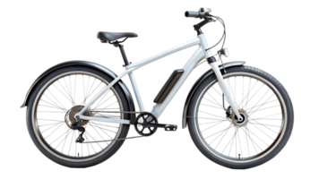

Lab 6 - Arrays and Objects
Challenge
In this lab, we were tasked to use the browser's console to declare arrays and objects. We then took what we wrote in the console and added it to a new JavaScript file inside our Lab 6 folder. We had to use the command console.log while in the browser and document.writeln to print our code to our websites. We finished the lab by updating and editing our Lab 6 HTML file and publishing it on GitHub.
Problems
I struggled a bit trying to make sure I added spaces where there needed to be when trying to print my code. It was a bit difficult to read because all of my sentences were spliced but I figured it out with some quick fixes.
Reflection
This lab was very similar to the previous lab and well layed out for us in the lecture so everything was pretty easy to understand and do. My partner and I worked on our own sites but were there to help with questions and help work out any issues.
Results